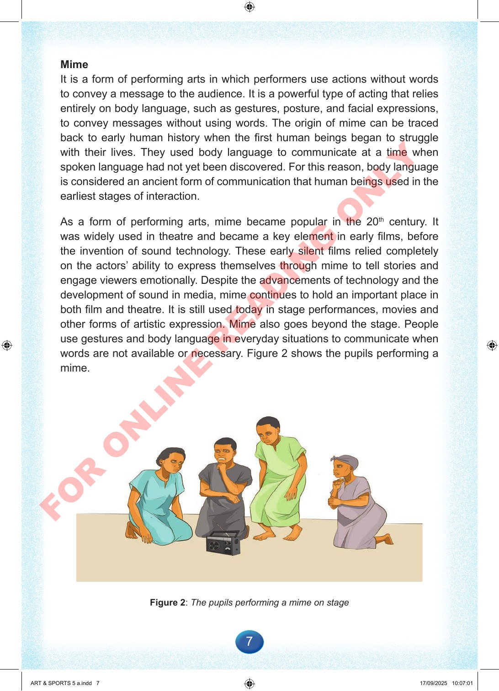

7
Mime
It
is
a
form
of
performing
arts
in
which
performers
use
actions
without
words
to
convey
a
message
to
the
audience.
It
is
a
powerful
type
of
acting
that
relies
entirely
on
body
language,
such
as
gestures,
posture,
and
facial
expressions,
to
convey
messages
without
using
words.
The
origin
of
mime
can
be
traced
back
to
early
human
history
when
the
first
human
beings
began
to
struggle
with
their
lives.
They
used
body
language
to
communicate
at
a
time
when
spoken
language
had
not
yet
been
discovered.
For
this
reason,
body
language
is
considered
an
ancient
form
of
communication
that
human
beings
used
in
the
earliest
stages
of
interaction.
As
a
form
of
performing
arts,
mime
became
popular
in
the
20th
century.
It
was
widely
used
in
theatre
and
became
a
key
element
in
early
films,
before
the
invention
of
sound
technology.
These
early
silent
films
relied
completely
on
the
actors’
ability
to
express
themselves
through
mime
to
tell
stories
and
engage
viewers
emotionally.
Despite
the
advancements
of
technology
and
the
development
of
sound
in
media,
mime
continues
to
hold
an
important
place
in
both
film
and
theatre.
It
is
still
used
today
in
stage
performances,
movies
and
other
forms
of
artistic
expression.
Mime
also
goes
beyond
the
stage.
People
use
gestures
and
body
language
in
everyday
situations
to
communicate
when
words
are
not
available
or
necessary.
Figure
2
shows
the
pupils
performing
a
mime.
Figure
2:
The
pupils
performing
a
mime
on
stage
ART
&
SPORTS
5
a.indd
7
ART
&
SPORTS
5
a.indd
7
17/09/2025
10:07:01
17/09/2025
10:07:01
F
O
R
O
N
L
I
N
E
R
E
A
D
I
N
G
O
N
L
Y